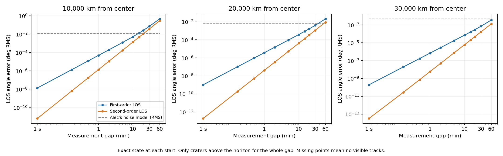

My work
I work on lunar optical navigation, measurement gaps, and crater-based estimates. The project builds on the team's source models and compares first- and second-order predictions as the time between observations grows.
The study
The higher-orbit study tested 10,000, 20,000 and 30,000 km from the Moon's center. Second-order prediction had lower RMS angular error in all 33 tested orbit-and-gap combinations.
That result applies to these circular, two-body simulations. Camera pointing, lighting and the full navigation filter are outside this test.
